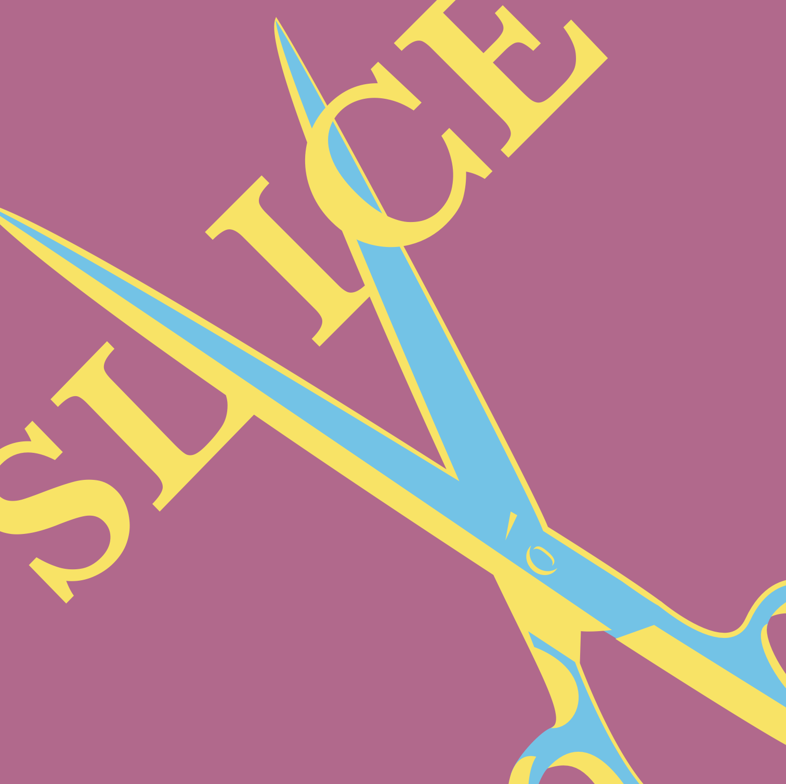
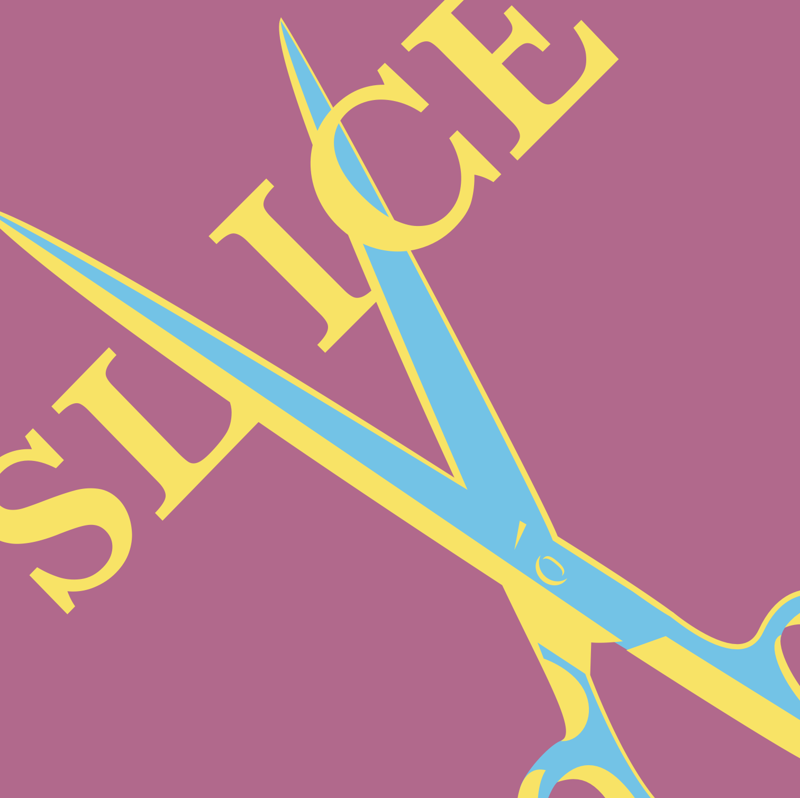

Why Graphic Design Interests Me
The past few years have been influential in my development of design skills. I started with simple illustrations in Adobe Illustrator like the house and Pepsi can, but transitioned to integrating Photoshop into the designs. Design, as a whole, opened my eyes to the intricacies of everyday objects and improved my detail-oriented mind. Every little detail counts and needs to be made so that the design works well.
 
